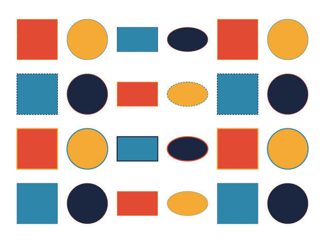

Grid Rhythm
Grid Rhythm is a panel extension for Adobe Illustrator 2026 that draws a rows-by-columns grid of shapes with a visible design rhythm. Choose a size, pick a shape sequence and fill pattern, and it builds the grid on a new layer that fits your active artboard.

What it does
Sized grids
Enter 1 to 20 rows and 1 to 10 columns. The panel will not move on until both values are valid.
Row rhythm
Use one row pattern so every row repeats the same sequence, or alternating rows so odd and even rows differ.
Shape sequence
Mix squares, circles, rectangles, ellipses, and a linked accent asset. Fills step or mirror through a small palette, and each cell can turn by a fixed step.
Why it is built this way
Every cell is drawn from one shared plan, so the live preview in the panel and the artwork in Illustrator follow the same rules. The shape order sets the beat, the fill mode sets the colour cadence, the rotation step turns each cell, and the stroke weight cycles by row. Dashes appear on every second row so the eye has an off-beat to follow.
Requirements
- Adobe Illustrator 2026 (host ILST, version 29.0 or later)
- Windows or macOS, as supported by Illustrator 2026
- A development install needs the debug flag described on the install page
.ai copy of the bundled SVG, so it is placed as a link, not embedded.
Get started
Follow the install guide to load the extension, then read the step-by-step usage guide. Release notes are in the changelog.